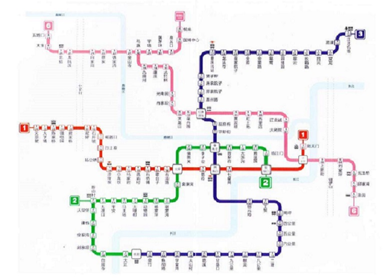

重庆地铁现运行地铁1号线、2号线、3号线、6号线和国博线轻轨。规划建设5号线一期，10号线一期，4号线，地铁环线……19号线,微信搜索公众号“bdbchongqing”或扫描下方二维码，关注重庆本地宝微信公众号，输入【轻轨】查看重庆轻轨首末班时刻表及票价政策。输入具体线路名称：4号线/5号线/10号线，获取具体线路走向，线路图，站点分布，开工时间，通车时间等信息。
近期规划:形成9条线路,总长410.24公里。这8个规划项目分别是:4号线一期、5号线一期、6号线支线一期和二期、9号线一期和二期,10号线以及环线,全长215.04公里。到2020年,我市将形成9条运营线路（即1、2、3、4、5、6、9、10号线和环线)、总长410。24公里的轨道交通基本网络,轨道交通占公共交通出行的比例为47%。
远期规划:环线+17条射线。按照规划,我市轨道远景规划为1环线+17条射线,总长约820公里,其中主城约780公里。届时,重庆主城轨道线网密度将达到0.69公里/平方公里。